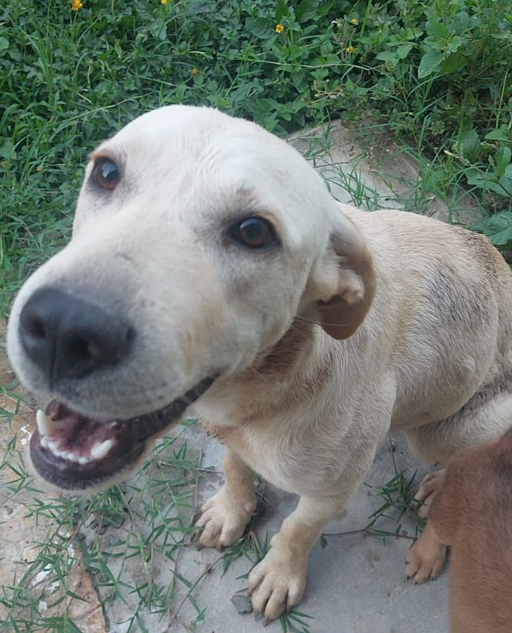
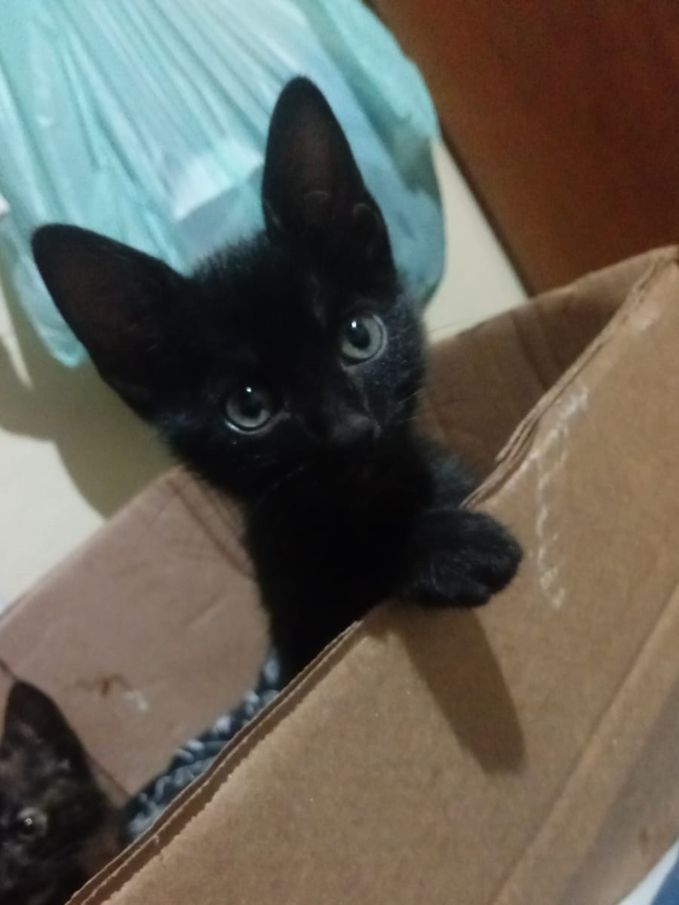

Ani
Disponível para adoçãoAni é uma cachorrinha carinhosa que espera encontrar uma família responsável para começar uma nova fase de sua vida.
Quero AdotarUma nova chance para eles. Um novo propósito para nós.
A PETS~HELP trabalha para proteger, cuidar e encontrar novos lares para animais em situação de rua.
Conheça nossos projetosA PETS~HELP é uma ONG fictícia dedicada ao cuidado, proteção e adoção responsável de animais em situação de rua.
Nossa missão é oferecer proteção, alimentação, assistência veterinária e novas oportunidades para animais que precisam de ajuda.
Também buscamos criar um espaço de acolhimento e propósito para pessoas que desejam ajudar, conhecer novas pessoas e fazer a diferença por meio do voluntariado.
Estes animais estão esperando por uma família que possa oferecer carinho, cuidado e um novo lar.

Ani é uma cachorrinha carinhosa que espera encontrar uma família responsável para começar uma nova fase de sua vida.
Quero Adotar
Luna é uma gatinha dócil e companheira que procura um lar onde possa receber muito carinho e atenção.
Quero Adotar
Vader é uma cachorrinha cheia de personalidade que está esperando por uma família para compartilhar momentos especiais.
Quero AdotarExistem diferentes formas de contribuir com a PETS~HELP, seja participando de projetos, realizando uma doação ou tornando-se voluntário.
Ver formas de ajudar